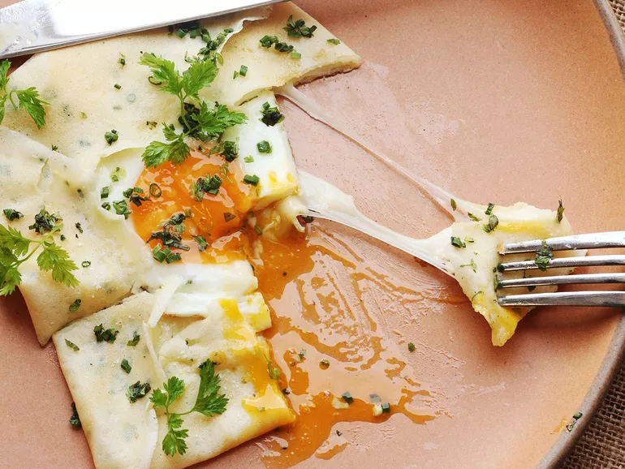

Basic Crepe

Description
Honestly, crepes are one of the fastest and most versatile breakfasts, dinners, or midnight snacks I can think of. Once you get comfortable with them, you'll have opened up a whole world of quick, delicious meals.
Ingredients
- 2 large eggs
- 1 1/4 cups whole milke
- 1 cup all-purpose flour (5 ounces; 140g)
- 1 tablespoon melted unsalted butter or vegetable oil (1/2 ounce; 15ml), plus more for cooking
- Pinch kosher salt
- 1 tablespoon (8g) sugar, if making sweet crepes
- 1 tablespoon minced fresh herbs, such as parsley, tarragon, chervil, or chives (optional; for savory crepes)
- For the Batter: Combine eggs, milk, flour, melted butter or oil, salt, and sugar (if using) in a blender. Start blender on low speed and increase to high. Blend until smooth, about 10 seconds. Add herbs (if using) and pulse to combine. (Alternatively, you can combine the ingredients in a mixing bowl and whisk vigorously until smooth.)
- To Cook: Heat a 10-inch nonstick or well-seasoned cast iron or carbon steel skillet over medium heat for 2 minutes. Lightly grease with oil or butter, using a paper towel to wipe out the excess.
- Hold the pan's handle in one hand and pour in 3 to 4 tablespoons (45 to 60ml) batter, swirling and tilting pan immediately to spread batter in a thin, even layer over bottom of pan.
- Let cook until top looks dry, about 20 seconds. Using a thin metal or nylon spatula, lift one edge of crepe. Grab that edge with the fingers of both hands and flip crepe. Cook on second side for 10 seconds, then transfer to a plate. Repeat with remaining batter. Fill crepes as desired (such as with butter, sugar, and lemon juice; with butter and jam; with ham, cheese, and eggs; or with spinach and feta) and serve. Crepes can also be made ahead and stored, unfilled and wrapped in plastic, in the refrigerator for up to 3 days. Reheat in a nonstick pan to serve.
Source: Serious Eats